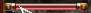

| Hovered color | Selected color | Hovered zoom | Pixel correct color | Pixel mismatch color | Pixel mismatch zoom |
|---|---|---|---|---|---|
Bug: Do not scroll/resize the page after setting up monitoring.
After clicking Start and selecting your main leveling window, click on the video at the left side of the desired group members HP bars to register pixels to monitor so that it can be detected when they turn completely black from group member death. In fact this web page only checks if the selected pixels change color at all.
Example:

This web page will play a sound when a group member death is detected (more simply if the selected pixels changed color at all). If anything goes wrong or you want to start over click Clear monitored pixels to delete all pixels being monitored and stop receiving any sound alarms.